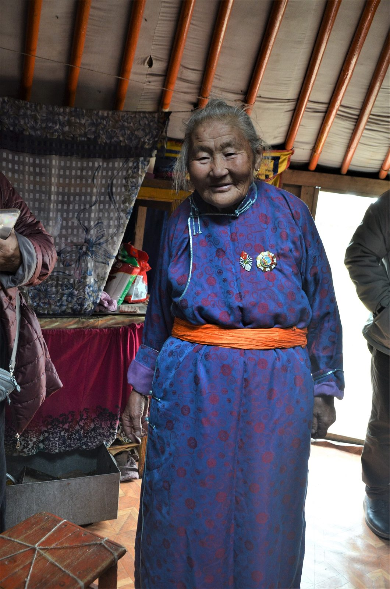
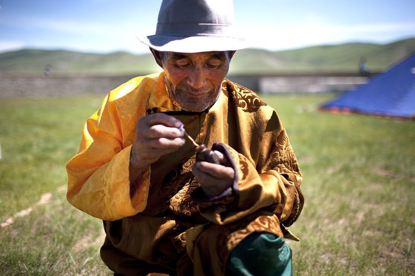
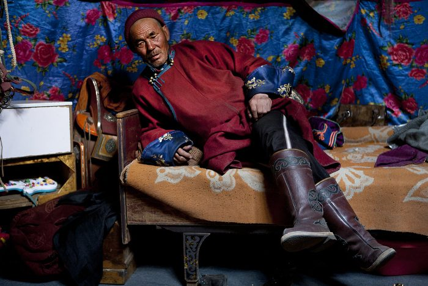
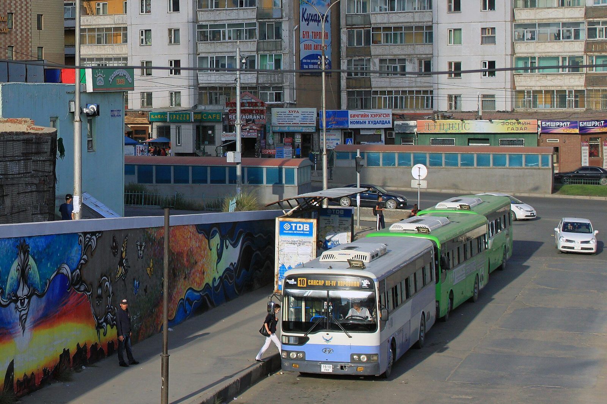
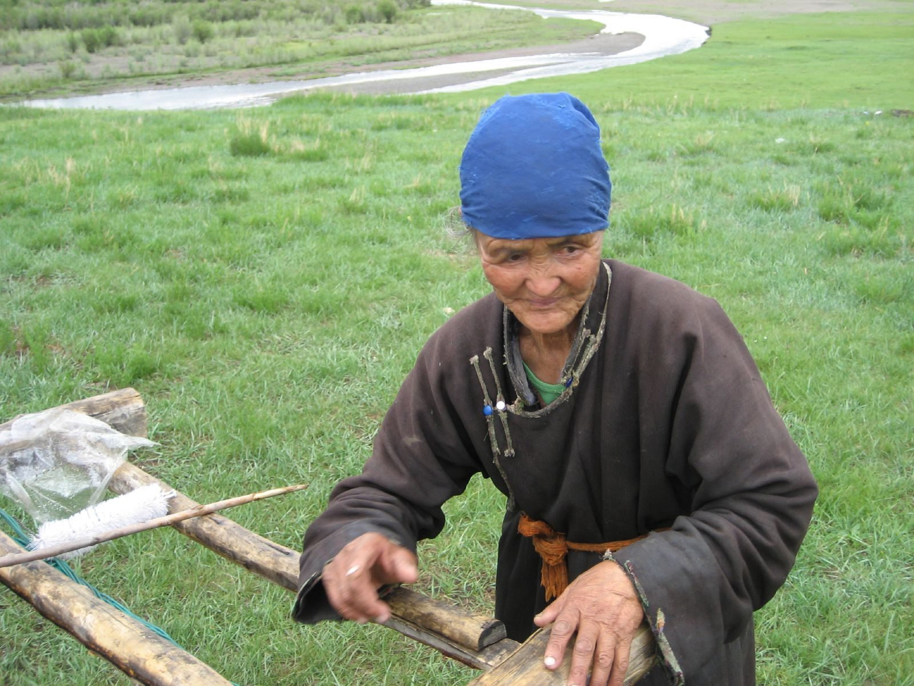
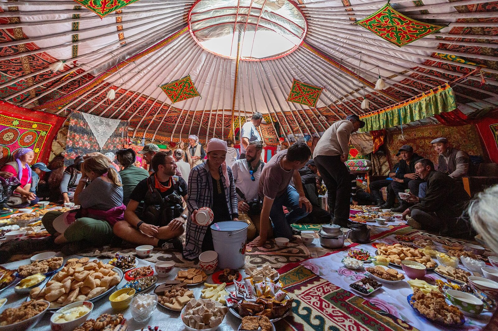

Ачааны машин жолоодож, морь уралдуулж олон удаа шагнагдсан эмээ
Хүний хөгжил · Семинарын илтгэл
Бидний эрх
хаана
зөрчигдөжбайна вэ?
— Ахмад настны эрх
Хүний хөгжил
1-р курс
Баг · 6 гишүүн
Сайн байцгаана уу. Бид өнөөдөр ахмад настны эрхийн тухай ярина. Энэ
сэдэв бидэнд хол мэт санагдаж болох ч үнэндээ гэр бүл бүрт өдөр бүр
тулгардаг асуудал. Зураг дээрх эмээ залуудаа ачааны машин жолоодож,
морь уралдуулж олон удаа шагнагдсан хүн. Ахмад хүнийг зөвхөн "асрах
хэрэгтэй хүн" гэж харвал бид ийм түүхүүдийг анзаарахгүй өнгөрдөг.
Эхлээд нэг асуулт
Нас ахисан гэдэг нь хүний эрх
багассан
гэсэн үг үү?
Тийм 0 Үгүй 0 Гараа өргөөрэй · товч дээр дарж тоолно
Эхлээд танхимаас нэг асуулт асууя. Нас ахисан гэдэг нь хүний эрх
багассан гэсэн үг үү? "Тийм" гэж бодож байвал гараа өргөөрэй, одоо
"үгүй" гэж бодож байгаа нь. Ихэнх хүн шууд "үгүй" гэж хариулдаг. Гэтэл
өдөр тутамдаа бид яг эсрэгээр нь хандах нь олонтаа гэдгийг энэ
илтгэлээр харуулахыг хичээнэ.
Нэг өглөө
07:40 · Автобусны буудал
Таяг тулсан эмээг хүлээлгүй автобус хаалгаа хаагаад хөдөлчихлөө.
Буудал дээр арав гаруй хүн байсан. Хэн ч юм хэлээгүй. Бид ч гэсэн.
Энэ бол та бүхний хэн нэг нь харж байсан байж магадгүй нөхцөл. Эхлээд
харахад жолоочийн л буруу юм шиг санагдана. Гэхдээ буудал дээр байсан
хэн ч дуугараагүй. Эрх зөрчигдөх гэдэг заавал том хэрэг биш, ийм
жижиг, чимээгүй мөчүүдээс эхэлдэг.
Ахмад настан
Ахмад настан гэж
хэн
бэ?
Ахмад нас бол өвчин биш, амьдралын жам ёсны нэг үе.
Тэд бусдын адил эрх, нэр төр, үзэл бодол, сонголттой.
Зөвхөн "асаргаа шаарддаг хүн" гэж харах нь өрөөсгөл.
Тэдэнд тусламж хэрэгтэй байж болох ч энэ нь тэдний өмнөөс шийдвэр
гаргах эрх бидэнд өгдөггүй.

Сумын наадам · Өгтаал сум
Монголд өндөр насны тэтгэвэр тогтоолгох насанд хүрсэн иргэнийг ахмад
настан гэнэ · Ахмад настны тухай хууль, 2017
Ахмад нас бол өвчин биш, хүний амьдралын жам ёсны нэг үе. Манай
хуулиар өндөр насны тэтгэвэр тогтоолгох насанд хүрсэн иргэнийг ахмад
настан гэж үздэг. Тэд бусадтай адил эрх, нэр төр, өөрийн үзэл
бодолтой. Тусламж хэрэгтэй байж болно, гэхдээ энэ нь бидэнд тэдний
өмнөөс шийдэх эрх олгодоггүй. Энэ санааг илтгэлийн турш санаж
байгаарай.
Хууль эрх зүйн үндэс
Хуулиар баталгаажсан эрх
Энэ слайдад зөвхөн хуулийн заалт байна. Бодит амьдрал дээр хэрхэн
хэрэгждэгийг дараагийн хэсгүүдэд харна.
Монгол Улсын Үндсэн хууль
14.2 Хүнийг насаар нь ялгаварлан гадуурхаж болохгүй.
16.5 Өндөр насандаа тэтгэвэр, тэтгэмж авах эрхтэй.
16.6 Эрүүл мэндээ хамгаалуулах, эмнэлгийн тусламж авах эрхтэй.
2017 Ахмад настны тухай хууль эдгээр эрхийг нарийвчлан
зохицуулдаг.
Эх сурвалж: Монгол Улсын Үндсэн хууль · Ахмад настны тухай хууль, 2017
Одоо хуулийн талаас харъя. Үндсэн хуулийн 14.2-т хүнийг насаар нь
ялгаварлан гадуурхахыг хориглосон байдаг. 16-р зүйлд өндөр насандаа
тэтгэвэр авах, эрүүл мэндээ хамгаалуулах эрхийг баталгаажуулсан. 2017
онд батлагдсан Ахмад настны тухай хууль эдгээрийг илүү нарийвчилдаг.
Энд байгаа нь цаасан дээрх эрх, бодит байдлыг удахгүй харна.
НҮБ · 1991
Таван зарчим
Бие даасан байх Амьдралаа өөрөө шийдэх.
Оролцох Нийгэмд дуу хоолойтой байх.
Асрамж Гэр бүл, эмнэлгээс халамж авах.
Өөрийгөө хөгжүүлэх Сурах, бүтээх, дуртай юмаа хийх.
Нэр төр Доромжлол, мөлжлөггүй амьдрах.
Эх сурвалж: НҮБ-ын Ахмад настны зарчим, Ерөнхий Ассамблейн 46/91
тогтоол, 1991
Олон улсын түвшинд НҮБ 1991 онд ахмад настны таван зарчмыг баталсан.
Бие даасан байх, оролцох, асрамж, өөрийгөө хөгжүүлэх, нэр төр.
Анхаарах зүйл гэвэл "асрамж" тавын зөвхөн нэг нь. Үлдсэн дөрөв нь
ахмад хүн өөрөө идэвхтэй, шийдвэр гаргагч байхын тухай.
Ахмад настны үндсэн эрхүүд
Найман эрх, нэг л хүн
Эрүүл мэндийн тусламж үйлчилгээ авах
Нийгмийн хамгаалал хүртэх
Ялгаварлан гадуурхагдахгүй байх
Хувийн нууц, нэр төрөө хамгаалуулах
Өөрийн амьдралын талаар шийдвэр гаргах
Гэр бүл, нийгмийн амьдралд оролцох
Аюулгүй, хүртээмжтэй орчинд амьдрах
Эдгээрийг нэгтгээд харвал ахмад настанд найман үндсэн эрх бий. Эрүүл
мэнд, нийгмийн хамгаалал гэх мэтийг бид ихэвчлэн мэддэг. Харин өөрийн
амьдралын талаар шийдвэр гаргах, хувийн нууцаа хамгаалуулах эрхийг
мартчихдаг. Тодруулсан энэ эрх гэр бүл дотор хамгийн амархан
зөрчигддөг.
Илтгэлийн гол асуулт
Туслах уу, өмнөөс нь шийдэх үү?
Тусламж Хяналт
Сонсох "Та юу гэж бодож байна?"
Мэдээлэл өгөх "Ийм сонголтууд байна."
Хамт шийдэх "Хамтдаа бодъё."
Өмнөөс нь шийдэх "Би шийдчихсэн."
Хориглох "Та битгий оролд."
Шалгах ганц асуулт: эцсийн шийдвэрийг хэн гаргаж байна вэ?
Энэ бол манай илтгэлийн гол асуулт. Туслах, хянах хоёрын хооронд тод
хил байдаггүй, нэг шугам дээр байрладаг. Сонсох, мэдээлэл өгөх, хамт
шийдэх бол тусламж. Харин өмнөөс нь шийдэх, хориглох нь хяналт руу орж
эхэлдэг. Хамгийн энгийн шалгуур: эцсийн шийдвэрийг хэн гаргаж байна
вэ?
Зөрчил
Эрх хаана зөрчигдөж болох вэ?
Бид дөрвөн орчныг сонгож харлаа. Эхний гурав нь хамгийн ойр, хамгийн
их итгэдэг орчин.
01 Гэр бүл Шийдвэр, санал, харилцаа
02 Эрүүл мэнд Үйлчилгээ, мэдээлэл, хандлага
03 Санхүү Тэтгэвэр, орлого, залилан
04 Нийгэм Тээвэр, цахим үйлчилгээ, оролцоо
Тэгвэл эдгээр эрх хаана зөрчигдөж болох вэ? Бид дөрвөн орчныг
сонгосон: гэр бүл, эрүүл мэнд, санхүү, нийгэм. Анзаарвал эхний гурав
нь хамгийн ойр, хамгийн их итгэдэг орчин. Нэг бүрчлэн харъя.

Орчин 1 / 4
Гэр бүл
"Ээж ээ, санаа зоволтгүй, бид шийдчихсэн."
Саналыг нь үл тоох
Өмнөөс нь шийдвэр гаргах
Ганцаардуулах
Санхүүгийн шийдвэрийг нь хянах
Шийдвэр гаргах эрх
Гэр бүл бол хамгийн их хайр байдаг газар ч эрх хамгийн чимээгүй
зөрчигддөг газар бас мөн. Жишээ нь байраа зарах, нүүх шийдвэрийг аав
ээжтэйгээ ярилцалгүй гаргах. Муу санаагүй ч үр дүнд нь ахмад хүн
өөрийн амьдралаас хөндийрдөг. Ганцаардуулах нь ч гэсэн зөрчил, учир нь
оролцох эрхийг нь хасаж байна.
Орчин 2 / 4
Эрүүл мэнд
"Нас л даа, яалтай ч билээ."
Үйлчилгээ авахад хүндрэлтэй: дугаар, дараалал, шат
Мэдээллийг ойлгоход хүндрэлтэй: хурдан яриа, жижиг үсэг
Наснаас шалтгаалсан ялгаатай хандлага
Эрүүл мэндийн тусламж авах эрх
Эмнэлэгт очиход ахмад хүнд хамгийн түрүүнд дараалал, шат, дугаар
тулгардаг. Эмч хурдан ярьж, жорыг жижиг үсгээр бичвэл мэдээлэл ойлгох
эрх нь хөндөгдөнө. Хамгийн аюултай нь "нас л даа" гэсэн хандлага.
Ингэж хэлэхэд эмчлэх боломжтой зовиур анзаарагдахгүй өнгөрч болно.
Орчин 3 / 4
Санхүү
"Картаа надад өгчих, би авчихъя."
Тэтгэвэр, орлогыг нь зөвшөөрөлгүй ашиглах
Санхүүгийн шийдвэрийг нь булаах
Утсаар залилах, луйврын эрсдэл
Өмчөө захиран зарцуулах эрх
Санхүү бол хамгийн эмзэг сэдэв. Тэтгэврийн картыг хүүхэд нь барих,
эмээгийн нэрээр зээл авах тохиолдол манайд цөөнгүй. Заримдаа энэ нь
тохиролцоотой байдаг, заримдаа үгүй. Үүн дээр утсаар залилах эрсдэл
нэмэгдэнэ. Гол асуулт: мөнгө нь хэний, шийдвэрийг хэн гаргаж байна вэ?

Орчин 4 / 4
Нийгэм
Шат нь өндөр, үсэг нь жижиг
Нийтийн тээврийн хүртээмж
Цахим үйлчилгээ ашиглах хүндрэл
Нийгмийн үйл ажиллагаанаас тусгаарлагдах
Оролцох эрх
Нийгмийн орчин гэдэг нь бидний бүгдийн хуваалцдаг орон зай. Автобусны
өндөр шат, мөстэй зам, зөвхөн аппаар авдаг үйлчилгээ ахмад хүнийг
гэрээсээ гарахгүй болгодог. Гарахаа больсон хүн аажмаар нийгмээс
тусгаарлагдана. Тэгэхээр энэ бол зөвхөн гэр бүлийн биш, хот төлөвлөлт,
үйлчилгээний асуудал.
Ахмад настны эсрэг хүчирхийлэл
Зөвхөн гар хүрэхийг хэлэхгүй
Бие махбодын Түлхэх, хүчээр барих, хөдөлгөөнийг нь хязгаарлах
Сэтгэл санааны "Таны бодол одоо хамаагүй."
Санхүүгийн "Таны тэтгэврийн мөнгийг би зохицуулна."
Үл хайхрах Эм, хоол, асаргааг нь тоохгүй орхих
Эрх, сонголтыг нь хязгаарлах "Та хөгширсөн болохоор өөрөө шийдэх хэрэггүй."
Хэн нэгний сонголт, мөнгийг зөвшөөрөлгүй хянах нь "халамж" биш, хүний
эрхийн асуудал болж болно.
Хүчирхийлэл гэхээр бид ихэвчлэн зодох, цохихыг төсөөлдөг. Гэтэл
Дэлхийн эрүүл мэндийн байгууллага сэтгэл санааны, санхүүгийн
хүчирхийлэл болон үл хайхрахыг ч хүчирхийлэлд тооцдог. Сүүлийн мөрийг
бид тусад нь нэмсэн: сонголтыг нь хязгаарлах нь хамгийн "эелдэг"
хэлбэр учраас хүмүүс анзаардаггүй. Дэлгэц дээрх үгс танил санагдаж
магадгүй.
Тоо
60-аас дээш насны зургаан хүн тутмын нэг нь өнгөрсөн нэг жилд ямар нэг
хүчирхийлэлд өртсөн.
Итгэлцэл
ДЭМБ үүнийг итгэлцэл байх ёстой харилцаан дахь үйлдэл гэж
тодорхойлдог.
Далд
Ихэнх тохиолдол хэзээ ч мэдээлэгддэггүй.
Эх сурвалж: ДЭМБ, Abuse of older people, 2024
Энэ тоо Дэлхийн эрүүл мэндийн байгууллагаас гаралтай. Дэлхий даяар
60-аас дээш насны зургаан хүн тутмын нэг нь өнгөрсөн нэг жилд ямар нэг
хүчирхийлэлд өртжээ. ДЭМБ үүнийг итгэлцэл байх ёстой харилцаан дахь
үйлдэл гэж тодорхойлдог, өөрөөр хэлбэл ихэнхдээ ойр хүмүүсээс гардаг.
Бас ихэнх тохиолдол хэзээ ч мэдээлэгддэггүй.
Шалтгаан
Яагаад эрх нь зөрчигддөг вэ?
01 Насжилтын талаарх буруу ойлголт "Хөгшин хүн ойлгохгүй" гэсэн хэвшмэл бодол
02 Хэт хамгаалах хандлага Санаа зовсондоо сонголтыг нь булаах
03 Эдийн засгийн хараат байдал Орлого нь хүүхдээсээ хамааралтай бол дуугарахад хэцүү
04 Мэдээлэл, технологийн ялгаа Бүх юм аппад шилжсэн, заах хүн алга
05 Гэр бүлийн харилцааны асуудал Ярилцдаггүй гэрт санал сонсогддоггүй
06 Хүртээмжгүй орчин Шат, мөстэй зам, жижиг үсэг
07 Нийгмийн тусгаарлалт Ганцаараа байх тусам эрсдэл нэмэгдэнэ
Яагаад ийм зүйл болдог вэ? Бид долоон шалтгааныг ялгаж харсан.
Сонирхолтой нь ихэнх нь хорон санаа биш: хэт хамгаалах, яарах, ойлголт
дутах. Эдийн засгийн хараат байдал нэмэгдэх тусам ахмад хүн дуугарахаа
больдог. Шалтгааныг ойлгосноор бид буруутан хайхаас илүү шийдэл рүү
харж чадна.
Шалтгаан ба үр дагавар
Нэг жижиг шалтгаанаас эхэлдэг
01 Шалтгаан Утсаа ашиглаж сураагүй
02 Эрх хязгаарлагдах Цахим лавлагаа, үйлчилгээ авч чадахгүй
03 Оролцоо буурах Бусдаас улам хамааралтай болно
04 Амьдралын чанар Ганцаардал, итгэлгүй байдал нэмэгдэнэ
Гинжийг аль ч шатанд тасалж болно. Хамгийн амархан нь эхэнд нь.
Эдгээр шалтгаан нэг удаа биш, гинжин холбоо шиг ажилладаг. Жишээ нь
утсаа ашиглаж сураагүй эмээ цахим лавлагаа авч чадахгүй. Дараа нь
үйлчилгээнд хандахаа больж, бусдаас улам хамааралтай болно. Эцэст нь
амьдралын чанар нь буурна. Гинжийг аль ч шатанд тасалж болно, ялангуяа
эхэнд нь.
Кейс · Бодит амьдралын жишээ
70 настай Д гуай тэтгэврийн мөнгөө хэрхэн зарцуулахаа өөрөө
шийдэхийг хүсдэг. Гэвч хүүхэд нь "Та хөгширсөн учраас мөнгөө өөрөө
зохицуулж чадахгүй" гэж үзээд бүх санхүүгийн шийдвэрийг өөрөө
гаргадаг.
Энд ямар эрх хөндөгдөж байна вэ?
1:00 Хөршөөсөө асуугаад ярилцъя
Одоо нэг жишээ авч үзье. Д гуай 70 настай, тэтгэврээ өөрөө зарцуулахыг
хүсдэг. Хүүхэд нь "та хөгширсөн" гэж үзээд бүх санхүүгийн шийдвэрийг
өөрөө гаргадаг. Хажуудаа суугаа хүнтэйгээ нэг минут ярилцаарай: энд
ямар эрх хөндөгдөж байна вэ? Цагийг эхлүүлэхийн тулд товч дээр дарна.
Кейс · Хэлэлцүүлэг
Гурван өнцгөөс харъя
1
Д гуайн хүсэл, сонголт
Тэр өөрөө юу хүсэж байна? Хэн нэг нь түүнээс асуусан уу?
2
Хүүхдийн "туслах" санаа
Санаа зовох бодит шалтгаан байж болох уу? Жишээ нь залилангаас
айх.
3
Тусламж ба хяналтын ялгаа
Хамт шийдэх арга байна уу? Хил нь хаана вэ?
Энд "сайн хүн, муу хүн" гэж байхгүй. Хоёулаа хайрладаг. Гэхдээ хайр
заримдаа хяналт болж хувирдаг.
Хэд хэдэн хүний саналыг сонсъё. Картууд дээр дарж асуултуудыг нэг
нэгээр нь нээнэ. Энд сайн, муу хүн гэж хуваах амаргүй: хүүхэд нь
залилангаас хамгаалах гэсэн бодит шалтгаантай байж болно. Гэхдээ Д
гуайгаас асуулгүй шийдэж байгаа нь хяналт руу хэлбийж байна. Хамт
шийдэх гарц байна уу гэдгийг бодоод үзээрэй.
Монголын өдөр тутмын орчинд
Бидний сайн мэдэх нөхцөлүүд
Нийтийн тээвэр Үнэгүй зорчих эрхтэй ч автобусанд суух нь сорилт
Эмнэлэг Өглөө эртлэх дугаар, урт дараалал
Цахим үйлчилгээ Лавлагаа, өргөдөл бүгд утсаар
Тэтгэвэр, санхүү Тэтгэврийн зээл, бусдад өгсөн карт
Гэр бүл Олон үе хамт амьдрахад дуу хоолой нь сулрах
Ганцаардал Хүүхдүүд нь хот, гадаадад
Хөдөлмөр "35 хүртэлх насны" ажлын зар
Нийгмийн оролцоо Хурал, клуб, сайн дурын ажилд урилга ирэхгүй
Ахмад настны эрхийн асуудал зөвхөн гэр бүлийн асуудал биш. Нийгмийн
орчин, үйлчилгээ, хүртээмжтэй шууд холбоотой.
Одоо эдгээрийг Монголын өдөр тутамд буулгаад харъя. Автобус, эмнэлгийн
дараалал, цахим үйлчилгээ, тэтгэврийн зээл гээд бүгд бидний сайн мэдэх
зүйлс. Эндээс харахад асуудал зөвхөн гэр бүлийн дотор биш. Үйлчилгээ,
орчин хүртээмжгүй бол хамгийн сайн гэр бүл ч ахмад хүнээ бүрэн
хамгаалж чадахгүй.
Бидний хийж чадах зүйл
Маргаашаас
л эхэлж болно
Гэр бүлд
Саналыг нь сонсох
Шийдвэрт нь оролцуулах
Санхүүгийн эрхийг нь хүндэтгэх
Нийгэмд
Хүртээмжтэй орчин бий болгох
Цахим үйлчилгээг ойлгомжтой болгох
Насаар ялгаварлахыг багасгах
Өдөр тутамд
Сонсох
Хүндэтгэх
Туслах, гэхдээ өмнөөс нь шийдэхгүй
Хүчирхийлэл харвал 102 руу залгаарай.
Тэгвэл бид юу хийж чадах вэ? Гэр бүлдээ хамгийн энгийн алхам бол
шийдвэр гаргахаасаа өмнө асуух. Нийгмийн түвшинд бид ирээдүйн инженер,
мэргэжилтнүүдийн хувьд хүн бүрт ойлгомжтой үйлчилгээ бүтээх боломжтой.
Хүчирхийлэл харвал 102 руу залгахаас бүү эргэлз.

Бидний хандлага
01 Сонсох02 Хүндэтгэх03 Туслах
04 Гэхдээ өмнөөс нь шийдэхгүй
Бүх зүйлийг дөрвөн алхамд багтааж болно. Сонсох, хүндэтгэх, туслах.
Гэхдээ өмнөөс нь шийдэхгүй байх. Сүүлийнх нь хамгийн хэцүү, учир нь
бид ихэнхдээ сайн санаагаар өмнөөс нь шийдчихдэг.
Дүгнэлт
Нас бол хүний эрхийг
багасгадаг
шалтгаан биш.
Туслах ≠ Өмнөөс нь шийдэх
Товчхондоо, нас бол хүний эрхийг багасгадаг шалтгаан биш. Туслах,
өмнөөс нь шийдэх хоёр ижил зүйл биш. Энэ ялгааг анзаарах нь ахмад
хүнийг хүндэтгэх эхний алхам.

Эцсийн асуулт
Бид ахмад настныг хамгаалж байна уу, эсвэл заримдаа тэдний сонголтыг
өөрсдөө хязгаарлаж байна уу?
Эцэст нь та бүхэнд нэг асуулт үлдээе. Бид ахмад настныг хамгаалж байна
уу, эсвэл заримдаа тэдний сонголтыг өөрсдөө хязгаарлаж байна уу? Энэ
асуултад ганц зөв хариулт байхгүй байж магадгүй. Гэхдээ дараагийн удаа
эмээ, өвөөтэйгээ ярилцахдаа санаж яваарай.
Баярлалаа
Багийн гишүүд
Б.Сундуйбазар B261910006
Б.Маналсүрэн B261890073
Б.Сарнай B261890021
Эрдэнэбаяр
Т.Нямхүү B262230089
Цэнгэл
Эх сурвалж: Монгол Улсын Үндсэн хууль · Ахмад настны тухай хууль,
2017 · НҮБ-ын Ахмад настны зарчим, ЕА-н 46/91 тогтоол, 1991 · ДЭМБ,
Abuse of older people, 2024
Зураг (Wikimedia Commons): CeeGee, CC BY-SA 4.0 · Taylor Weidman /
The Vanishing Cultures Project, CC BY-SA 3.0 · Chinneeb, CC BY 4.0 ·
Steve Burt, CC BY-SA 2.0 · Bfreeproductions, CC BY-SA 4.0
Анхаарал хандуулсанд баярлалаа. Асуулт байвал баг маань хариулахад
бэлэн байна. Ашигласан эх сурвалж, зургийн зохиогчдыг энд жагсаасан.